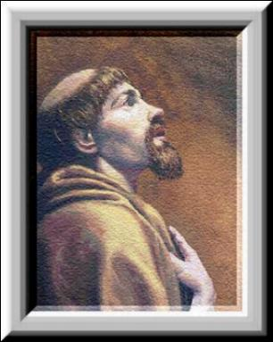
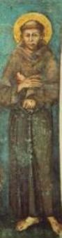
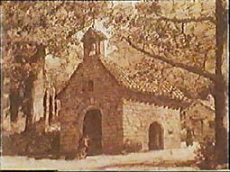
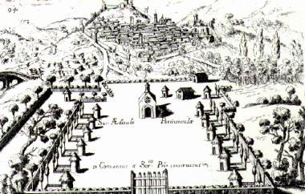

Na continuidade dos dias, sucedeu que logo apareceram os discípulos, aqueles companheiros que entusiasmados com sua transformação, queriam imita-lo. E no meio de muitos que vieram, historicamente o primeiro discípulo conhecido foi Frei Bernardo Quintavalle, que além de discípulo tinha uma grande devoção pelo Santo. A sua adesão e de mais três rapazes, aconteceu na Igreja de São Nicolau. Como Francisco ainda não tinha escrito uma Diretriz ou Norma de Vida para quem quisesse seguir os seus passos, colocou-se nas Mãos de DEUS a fim de que ELE inspirasse a sua conduta. Na Igreja, diante do Sacrário, abriu ao acaso por três vezes a Santa Bíblia e leu as seguintes frases: ?Se queres ser perfeito, vai, vende os teus bens e dá aos pobres, e terás um tesouro nos Céus.? (Mt19,21). Na segunda vez: ?Quem quiser vir após mim, renuncie a si mesmo, tome a sua cruz e siga-me.? (Mt 16,24) E finalmente na terceira vez: ?Não queirais levar para a viagem coisa alguma?. (Lc 9,3)
Bernardo era nobre e possuía muitos bens. Separou sua parte na herança, vendeu e distribuiu para os pobres de Assis e foi encontrar-se com Francisco.
Em
pouco tempo já se contavam quatro Frades na cabana da Porciúncula e com 
Mas para seguir o projeto de vida escolhido por Francisco, não necessitavam de uma moradia fixa, porque passavam a maior parte do tempo em missões, na periferia da cidade ou em outros locais, trabalhando dois a dois ou sozinhos, depois de terem sido devidamente preparados pelo Santo. Eram humildes e objetivos, quando entravam numa cidade, paravam na praça do mercado e cantavam um hino de louvor a DEUS, com a finalidade de atrair a atenção do povo. Logo, formava-se uma multidão de gente ao redor deles.
A letra do hino que Francisco ensinou-lhes era assim:
?Temei e honrai a DEUS,
louvai e glorificai o SENHOR!?
?Agradecei ao CRIADOR, Onipotente, e invocai o DEUS Uno e Trino: PAI, FILHO e ESPÍRITO
SANTO, que fez todas as coisas!?
?Convertei-vos para que possam produzir frutos sadios e não se esqueçam de que em breve
morrerão!?
?Dai e receberão! Perdoai e também serão perdoados!?
?Mas se não perdoardes as faltas das pessoas, também o SENHOR não perdoará os seus pecados!?
?Sedes humildes e simples, confessem corajosamente todos os seus pecados!?
?Felizes os que morrem depois de convertidos, porque irão para o Reino dos Céus!?
?Infelizes os que morrem em pecado, porque se tornarão filhos do diabo e viverão para
sempre no fogo eterno!?
?Guardai-vos e sejam solícitos em evitar o mal, em perseverar no bem, até o último dia de
sua vida!?
Com seis meses de apostolado, o número de Frades cresceu para nove homens. Por essa razão, Francisco decidiu deixar a cabana da Porciúncula (que significa, pequena porção de terra) e se transferiu para RivoTorto, instalando-se numa casa que conseguiu, a qual chamavam de ?tugurium?, porque era pequena e velha, embora o local fosse esplêndido. Ficava a cerca de 20 minutos a pé da Igreja de Santa Maria dos Anjos, em Porciúncula.
RIVOTORTO
Desde
o inicio, a existência dos frades era muito difícil, porque viviam em 
Francisco foi a Roma com seus frades, para conseguir de Sua Santidade o Papa, uma autorização oficial para estabelecer a Ordem que ele fundou. Esteve com o Papa Inocêncio III e lhe submeteu o programa de vida que havia escrito. Sem qualquer observação, o seu projeto da "Ordem dos Frades Menores" foi aprovado pelo Papa e pelos Cardeais.
Cheio de ideal, regressou a RivoTorto.
Mas, pouco tempo depois de ter regressado, foram expulsos do local. Aconteceu uma desagradável intriga entre os herdeiros da área onde a Comunidade Franciscana ocupava de favor. Por essa razão, decidiram retornar a Porciúncula.
Com disposição construíram diversas cabanas com ramos entrelaçados e rebocados com argila, como se fosse o nosso conhecido estuque, e cobertas com folhas. As cabanas ficavam próximas a Igreja de Santa Maria dos Anjos. Podemos considerar que este foi o primeiro Convento Franciscano (desenho abaixo). Logo que se instalaram, receberam uma nova falange de frades, alegres, dispostos e repletos de devoção por Francisco. A esta nova quantidade de postulantes, poderíamos chamar de segunda geração franciscana.
E sem dúvida, pela humildade e dedicação ao Evangelho, eles causavam admiração, onde estivessem. Desde o tempo dos Apóstolos, jamais alguém tão resolutamente e com tanto empenho, tentara colocar em prática os ensinamentos e as palavras de JESUS, como fizeram Francisco e seus seguidores.

